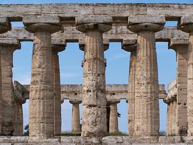
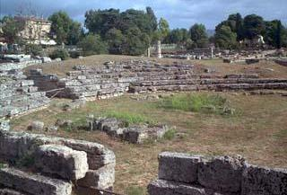
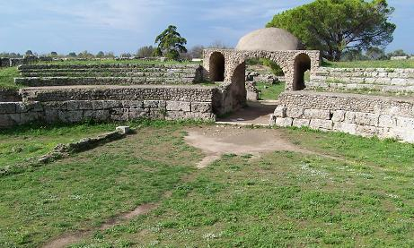
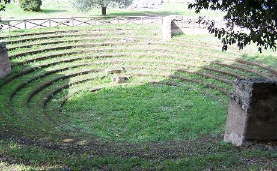
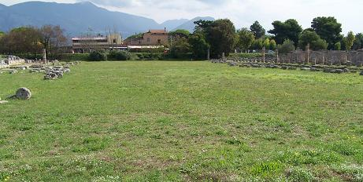
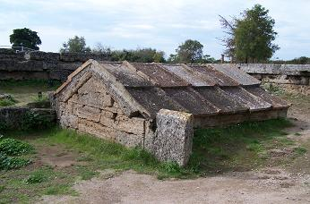
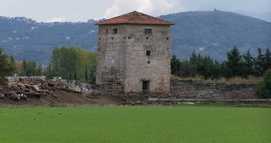
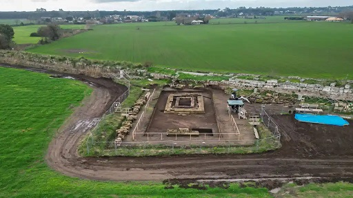
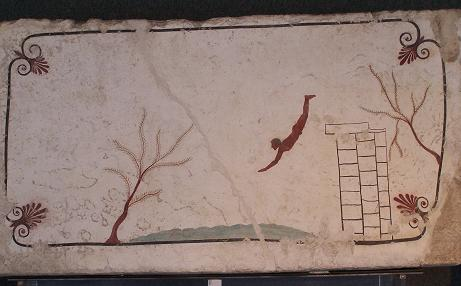

|
PAESTUM
La antigua Paestum, "ciudad de Poseidonia", fue fundada por los Aqueos de Sibaris como centro comercial marítimo a principios del siglo VI a.e.c. A finales del siglo V a.e.c. cayó en poder de los lucanos, que cambiaron el nombre griego por Paistos.
Ocupada durante un breve tiempo por los griegos, fue ocupada de nuevo por los lucanos en el 331-330 a.e.c durante las guerras samníticas. En el 273 fue rebajada a colonia latina por Roma; seguramente municipio con la "lex Iulia", se convirtió en colonia ciudadana en la época de Sila.
Mantuvo el privilegio único de acuñar moneda de bronce hasta los tiempos de Augusto y de Tiberio, en premio a la fidelidad demostrada a Roma durante las Guerras Púnicas.
Continuó siendo un rico centro agrícola incluso durante el bajo imperio. En los albores del Cristianismo, Paestum tuvo sus mártires y en el 370 descansaron allí los restos del apóstol San Mateo. Fue sede episcopal desde el siglo V y siempre permaneció cristiana. En el siglo IX la ciudad fue abandonada. Cayo en el olvido hasta que a partir de 1748, debido a la construcción de nuevos caminos fue redescubierta.
Los Templos Probablemente Paestum es el centro arqueológico más importante de Italia Meridional. El más grande de los templos es el llamado de Neptuno, construido en el 450 a.e.c., que constituye el ejemplo más perfecto de arquitectura dórica. El templo de Poseidón, o templo de Neptuno es, probablemente, el templo dórico mejor conservado de la magna Grecia en todo el mundo.
El templo de Hera o Basílica fue construido en el siglo VI a.e.c. Posee un pórtico de 34 columnas acanaladas, su forma nos recuerda a las basílicas. Alineada con el templo de Neptuno. La Llamada basílica también es un templo y debe considerarse como el más antiguo, puesto que presumiblemente fue construido a mitad de siglo VI a.e.c. Dedicado a la diosa Hera, está rodeado por un pórtico de 50 columnas dóricas y tiene delante un gran altar para los sacrificios y un pozo de sacrificios.

La Vía Sacra y el Barrio de Viviendas
El Ekklesiasterion de época griega se conservó, porqué la época romana se dejó bajo un montículo. Los romanos construyeron cerca un edificio más grande, comitium, destinado a funciones similares.

El anfiteatro está a medio excavar, por el discurre la carretera, data coma la mayoría de edificios de la organización urbanística del siglo I a.e.c.

El Bouleuterion era donde se celebraban las reuniones asamblearías de la ciudad.

El foro romano, se localiza en la parte meridional de la ágora griega. La estructura original data del siglo III a.e.c. Adyacentes a el se hallan las tabernaes, la curia, el macellum, el comitium y el templo Itálico, presumiblemente construido en el 80 a.e.c. dedicado a Júpiter, Juno y Minerva
. 
Fue levantado en un podio elevado con una larga escalinata enfrente, también ésta con un altar delante; originalmente había seis columnas en el frente y ocho en los lados largos. La piscina de 20x47m, aquí se ubicó el santuario de Venus Verticordia.


Altares, estatuillas y exvotos...

El Museo Recoge todo lo que se ha encontrado en la ciudad antigua y en las necrópolis de los alrededores. Conserva importantísimos capiteles dóricos, hay dos salas en las que se guardan varias metopas: la central tiene en lo alto un friso procedente de un templo de la primera mitad del siglo VI a.e.c., compuesto por 33 metopas, que constituye un conjunto que puede considerarse entre los más importantes de los que existen, incluso en Grecia. A los lados de esta sala, se suceden metopas de extraordinaria importancia, en cuanto que en ellas está representada toda la historia helénica y mitológica. La tercera sala central conserva obras de arte arcaicas encontradas en la ciudad, casi todas de significado religioso. La galería superior, ofrece objetos del paleolítico, del neolítico y de la edad de los metales.
Se han hallado numerosas y espléndidas tumbas de época lucana. Fueron halladas en las proximidades de la ciudad. Estaban construidas como pequeñas casas y las paredes y los techos se decoraban con frescos. La más famosa de estas tumbas es la llamada del saltador, “tuffatore”, aproximadamente del 480 a.e.c. La escena representada en el techo simboliza una transición armoniosa de la vida a la muerte.

|